Vuelve Compostario
Investigación y diseño UX para un sistema centralizado — CRM multi-rol para el primer servicio de compostaje
Resultados del proyecto
Diseñamos la primera versión de un dashboard CRM para Vuelve Compostario, centralizando en una sola plataforma lo que antes se sostenía entre WhatsApp, Excel, Google Forms y Trello.
Validamos con el stakeholder los wireframes de los 4 perfiles del sistema (administrador general, administrador ayudante, operario y cliente) y avanzamos hasta diseño de alta fidelidad en desktop y mobile. El proyecto quedó como base validada para una siguiente etapa de desarrollo — el testing de usabilidad con usuarios finales no llegó a realizarse por decisión del stakeholder de fasear el proyecto.

Mi Rol
Diseño UX/UI — investigación, definición, arquitectura de información, wireframes, UI final
Equipo
Fui el único diseñador UX/UI
Cliente
Vuelve Compostario (servicio de biotransformación de mascotas, Perú)
Timeline
~2 meses y 3 semanas · diseño UX/UI end-to-end, entrega en Figma
El Problema
Vuelve Compostario nació para resolver algo muy humano: qué hacer cuando una mascota muere y no hay un lugar adecuado para despedirla, sin recurrir a la incineración y su huella ambiental.
El servicio creció rápido — pero por dentro, seguía sostenido con WhatsApp, Excel y formularios de Google, fragmentando la información entre el equipo interno, los operarios y los clientes.
Cada tarea, cada mascota, cada etapa del compostaje vivía en una herramienta distinta, sin trazabilidad real.
Resumen del problema:
Vuelve Compostario necesitaba centralizar su operación del equipo interno, operarios y clientes en una sola plataforma, porque las herramientas dispersas fragmentaban la información y limitaban su capacidad de crecer sin perder la cercanía y transparencia que definen a la marca.
Componentes del problema:
- ✦ Procesos manuales: tareas repetitivas que consumían tiempo operativo y aumentaban el margen de error.
- ✦ Seguimiento ineficiente: no existía una vista centralizada del estado de cada servicio de compostaje.
- ✦ Comunicación desconectada: la coordinación entre equipo interno, operarios y clientes carecía de estructura y trazabilidad.
- ✦ Gestión de datos manual: información de clientes y mascotas recolectada por WhatsApp debía trasladarse a mano a Excel; Trello se usaba para tareas, también con copia manual.
Impacto por nivel:
-
✦ Usuario (equipo interno):
El flujo de trabajo evitaría tareas repetitivas y le daría a cada operario un timeline administrable de sus propias tareas. -
✦ Negocio:
El modelo de Vuelve depende de acompañar el proceso de principio a fin — desde la recogida de la mascota hasta la ceremonia simbólica y la entrega del compost final — y ese acompañamiento no podía sostenerse escalando solo con herramientas manuales. -
✦ Marca:
Vuelve se posiciona como un servicio ecoamigable y respetuoso; una operación interna caótica pone en riesgo justamente la transparencia y cercanía que la marca promete a las familias en un momento emocionalmente sensible.
Investigación
Al ser la primera empresa en Perú dedicada al compostaje de mascotas, la investigación se centró en entrevistas con el stakeholder principal y con los operarios, en vez de un benchmark de producto — no existía una referencia local de la cual partir.
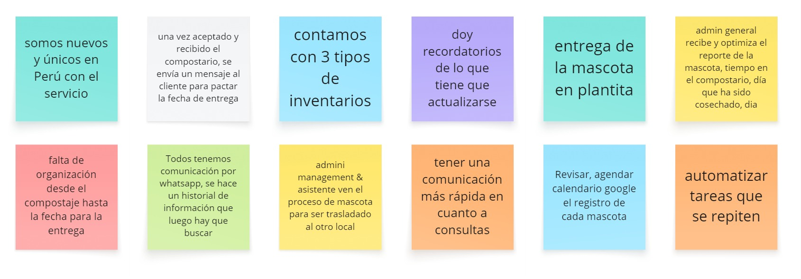
Qué exploré
- ✦ Cómo funciona el servicio y el mercado de compostaje en Perú
- ✦ Cómo se coordina hoy el equipo interno
- ✦ Cómo se gestionan los datos de clientes y mascotas
- ✦ Qué necesitaban los operarios para hacer seguimiento
Qué encontré
- ✦ Es un servicio pionero: el proceso acompaña a las familias en dos etapas — desde la recepción hasta la entrega final de una planta y un certificado conmemorativo
- ✦ La comunicación depende casi enteramente de WhatsApp, generando un historial disperso que exige búsqueda constante de información
- ✦ Se recolectan por WhatsApp y se trasladan a mano a Excel; Trello se usa para tareas, también copiadas manualmente
- ✦ No hay sistema de recordatorios automatizado — los operarios no siempre están pendientes de tareas programadas, causando retrasos, especialmente durante la cosecha
Insights
- I1: Los operarios necesitan visualizar con claridad qué tarea sigue y quién es responsable de cada etapa, para ejecutar sin confusiones.
- I2: El administrador general necesita visión clara y actualizada del trabajo diario — su falta de visibilidad genera retrasos y dificulta decisiones.
- I3: Cada usuario requiere un perfil enfocado en sus tareas específicas, mientras que el administrador necesita acceso más amplio para gestión y control.
Benchmark competitivo
Se realizó un benchmark de competencia indirecta, encontrando solo una empresa similar en Colombia, con un modelo de negocio distinto y sin sistema CRM propio.
Al no existir una referencia directa de un CRM multi-rol para este tipo de servicio, el benchmark se apoyó en ejemplos generales de dashboards administrables encontrados en la web, más que en una comparación estructurada de competidores — el hallazgo en sí (ausencia total de referencia directa) confirmó que el reto no era digitalizar un proceso ya resuelto en otro lugar, sino construir una herramienta a medida desde cero.
User persona


Flujo de usuario
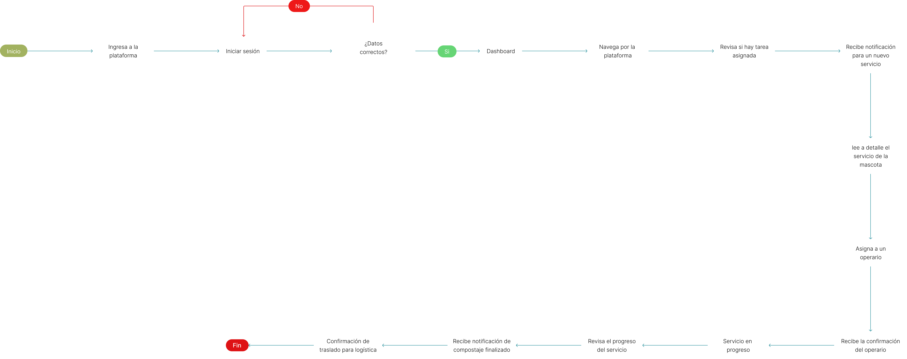
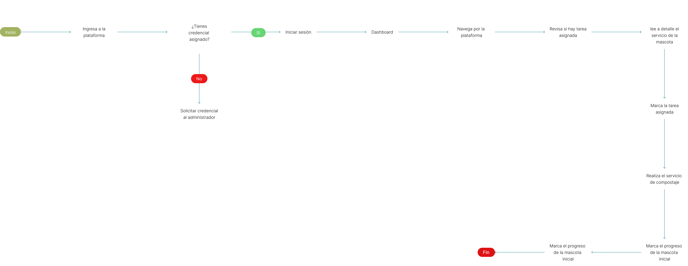
Proto - User Journey Map
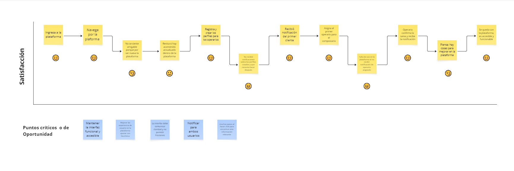
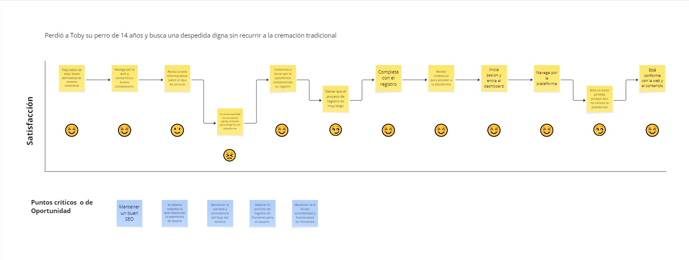
Mapa de Sitio

Definición
HMW — ¿Cómo podríamos?
| Insights | POV (Point of View) | ¿Cómo podríamos? (HMW) |
|---|---|---|
| Los usuarios sienten desconfianza al no entender claramente los servicios financieros. | Carlos necesita conocer qué tipo de asesoría ofrece Goal Capital y cómo puede ayudarle a invertir con seguridad. | ¿Cómo podríamos comunicar los servicios financieros de forma clara y visual para generar confianza inmediata? |
| Los usuarios abandonan el formulario de asesoría por ser extenso y poco guiado. | Mariana necesita poder agendar una cita en menos pasos y sentir que hay un asesor disponible para resolver sus dudas. | ¿Cómo podríamos simplificar el flujo de agendamiento rápido y confiable? |
| Los usuarios usan las herramientas financieras pero no saben qué hacer con los resultados. | Andrés necesita entender cómo interpretar los resultados de la calculadora y qué pasos seguir después. | ¿Cómo podríamos conectar los resultados de las herramientas con una acción concreta (agendar asesoría)? |
Solución
Decisiones clave de diseño
- ✦ Qué encontramos: al analizar las entrevistas con el stakeholder y el equipo operativo, organizamos los hallazgos en post-its y flujos operativos, identificando las áreas donde se generaban más fricciones. Dada la etapa inicial del producto, el trabajo de diseño necesitaba enfocarse en establecer hipótesis de estructura, no en pulir pantallas — sin un modelo de referencia previo, cada decisión debía validarse directamente con quienes conocían el flujo real del negocio.
- ✦ Qué resolvimos: definimos perfiles diferenciados para cada rol — administrador, ayudante, operario y cliente — cada uno con una vista enfocada solo en lo que necesita para su tarea, en vez de una interfaz genérica para todos. Construimos una visualización de timeline que sigue a cada mascota desde la recolección hasta la entrega del compost, visible en tiempo real tanto para operarios como para administradores. Priorizamos wireframes de baja fidelidad sobre pantallas pulidas — la etapa del producto pedía validar la estructura del sistema con el stakeholder antes de invertir en diseño visual, y esa validación fue la que definió qué pantallas merecían pasar a alta fidelidad. El proceso avanzó en formato de sprints: proponer, presentar al stakeholder, ajustar, y volver a presentar hasta llegar al wireframe final.
01 — Como administradora, quiero ver en un solo panel el estado general de la operación, para tomar decisiones sin reunir información dispersa entre WhatsApp, Excel y Trello
Antes: la información vivía repartida entre WhatsApp, Excel y Trello, sin una vista consolidada del día a día.
Después: un dashboard único que resume servicios recientes, servicios extras, total de clientes y de compost generado, además de recordatorios automáticos (como la cosecha de Scamp) y un timeline de operarios con el estado de cada recojo — en vez de tener que preguntar uno por uno.

02 — Como operario de compostaje, quiero ver solo las tareas y mascotas que tengo asignadas, para ejecutar sin revisar información que no me corresponde.
Antes: los operarios dependían de indicaciones manuales del administrador, sin un registro propio de sus tareas del día.
Después: un panel personalizado ("Hola, Felipe") que muestra únicamente sus actividades del día, el total de compost generado bajo su responsabilidad, y tarjetas de cada mascota en compostaje con acceso directo a "Ver ficha" — sin necesidad de preguntar qué sigue.

03 — Como cliente, quiero hacer seguimiento del proceso de mi mascota sin tener que escribir para preguntar cómo va, para sentir acompañamiento y transparencia durante todo el servicio.
Antes: el cliente dependía por completo de mensajes de WhatsApp para saber en qué estado se encontraba el proceso de su mascota.
Después: un perfil propio con seguimiento visible del servicio contratado, los datos de su mascota, y un mensaje de acompañamiento ("Nunca se fue, solo volvió para crear más vida") que sostiene el tono emocional del servicio incluso dentro de la plataforma.

04 — Como operario, quiero ver el detalle completo de cada mascota asignada desde la recepción hasta la cosecha para hacer seguimiento sin depender de papeles o mensajes sueltos.
Antes: el seguimiento de cada mascota se hacía de forma manual, sin un registro visual del avance por etapas.
Después: una ficha individual con timeline de etapas (recepción de la mascota, subir fotos, inicio de compostaje, monitoreos, cosecha), que el operario actualiza directamente conforme avanza — dejando trazabilidad real de cada etapa del proceso.

Validación
Se realizó una prueba de wireframes con el stakeholder para validar funciones y pantallas del dashboard, cubriendo los 4 perfiles y los flujos de registro, inicio de sesión y selección de servicio. Tras esa validación, no se llegó a realizar el testing de usabilidad final con usuarios reales (operarios o clientes) — por límite de tiempo y decisión del stakeholder de dejar esta etapa como base para retomar el desarrollo en un ciclo posterior.
Wireframes
Idea inicial
Diseñé un producto digital tipo CRM para la gestión y almacenamiento de datos de clientes. El proyecto comenzó con investigación cualitativa (entrevistas a stakeholders y análisis de procesos) para comprender sus necesidades y flujos de trabajo.
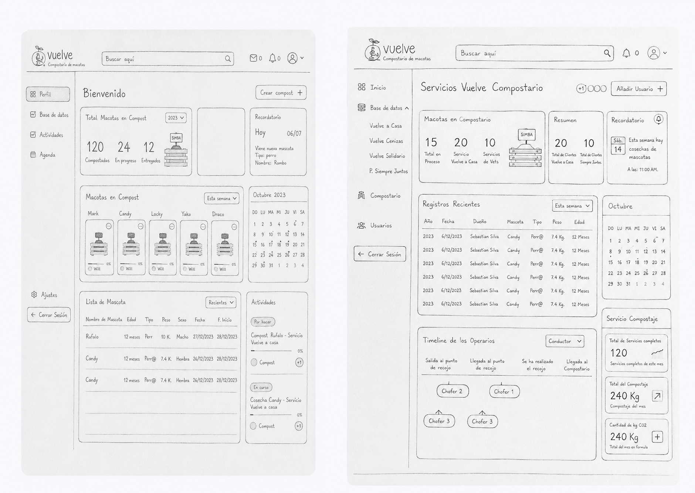
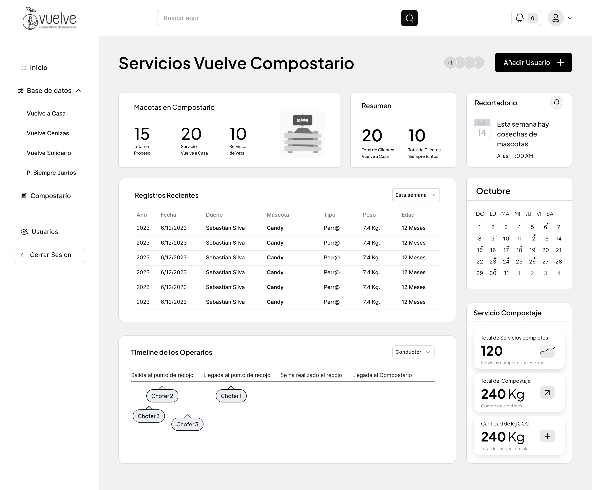
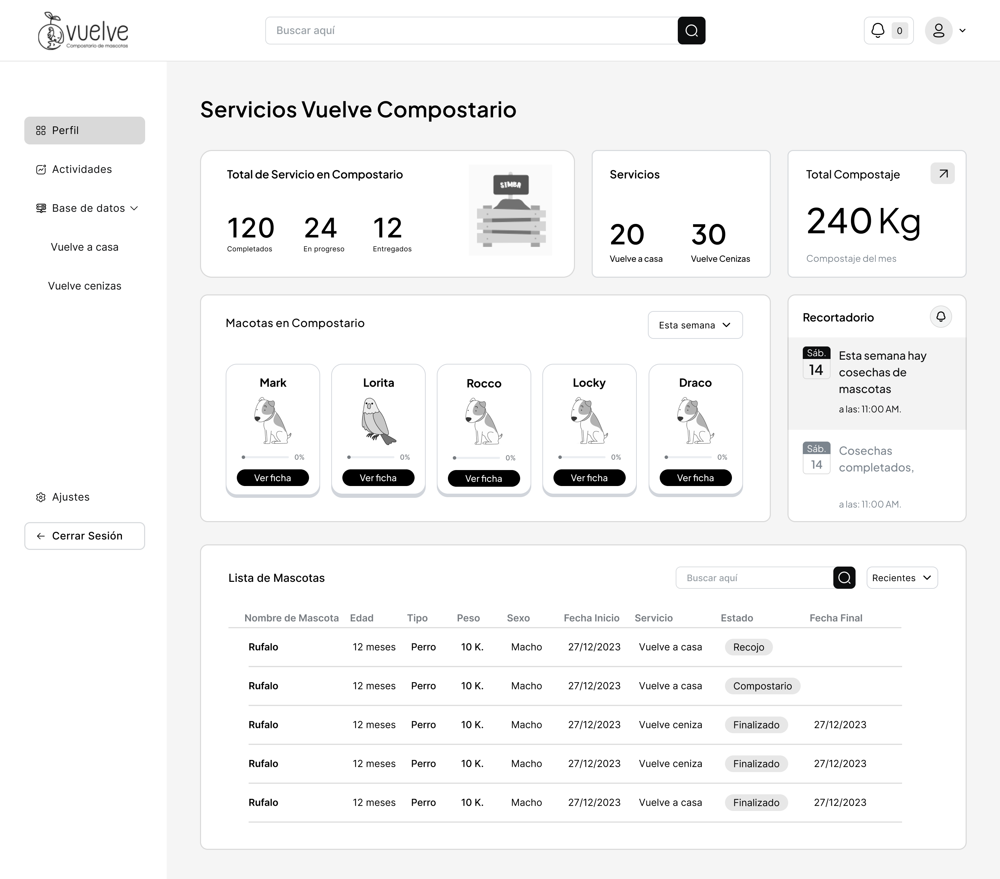
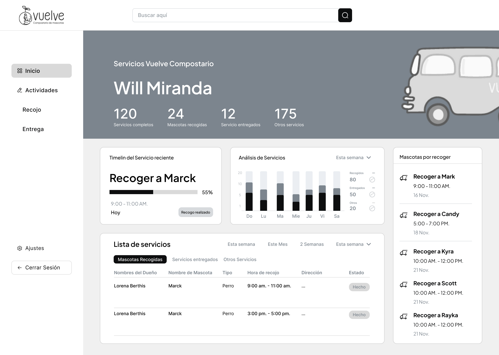
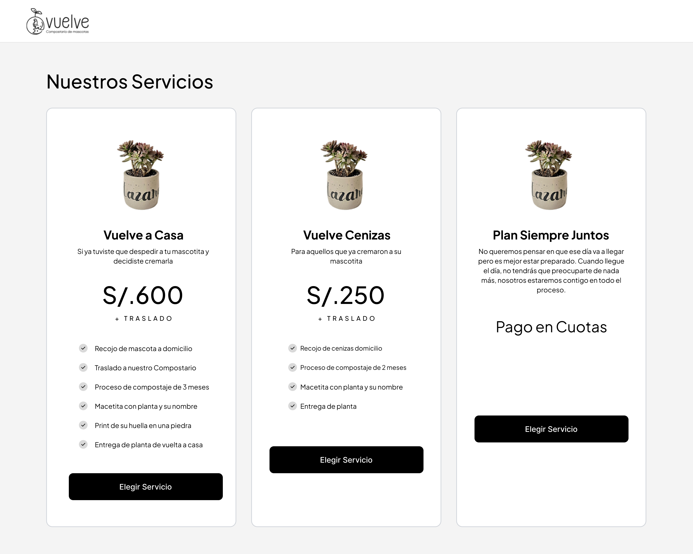
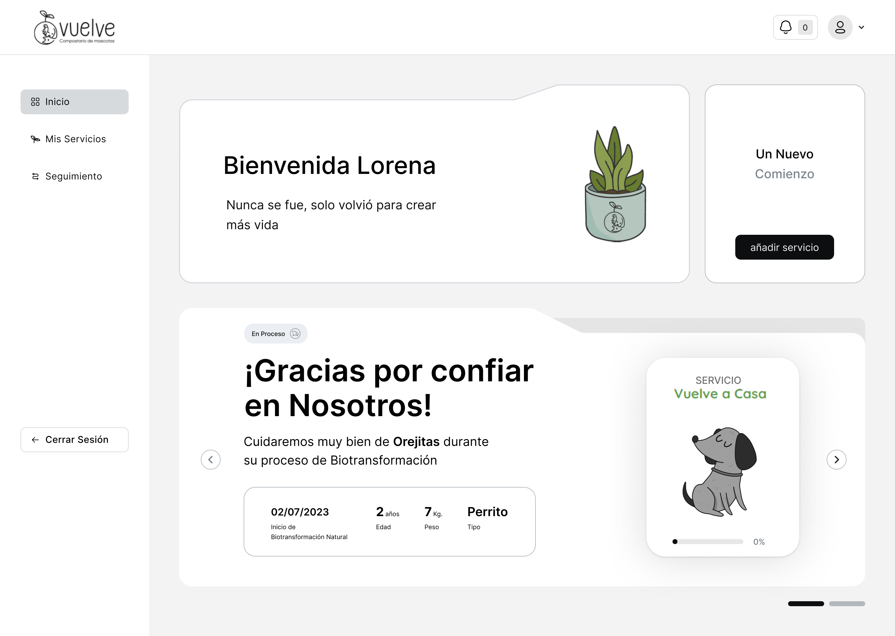
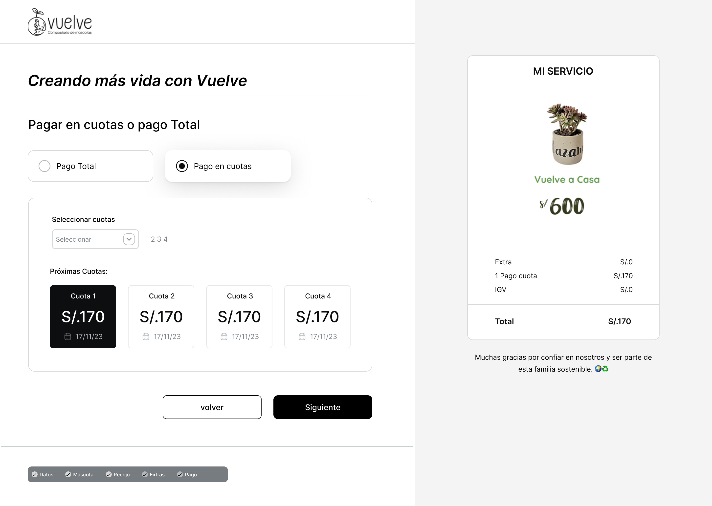
Guía de Estilos
Color

Tipografía

Espaciado

Grid

Componentes

Diseño Visual


Reflexión
Este proyecto fue mi primer CRM multi-rol como diseñador UX/UI sin referencia previa — el benchmark solo pudo comparar sitios web, no sistemas similares, y sin IA como apoyo de research. El reto no era visual, era traducir un flujo operativo real en un sistema digital, sin ningún modelo del cual partir.
Con los avances de ideas con bocetos entre bocetos, ejemplos externos y sesiones tipo sprint con el stakeholder — proponer, presentar, ajustar — hasta llegar a un wireframe alineado con su operación real, validando cada decisión directamente con quien conocía el negocio.
Aprendizaje: el proyecto se extendió más de lo estimado y el testing quedó fuera del alcance final. La lección: sin precedente claro, hay que estimar tiempo con más margen — y proteger el testing como parte no negociable del alcance, no como lo primero que se sacrifica.